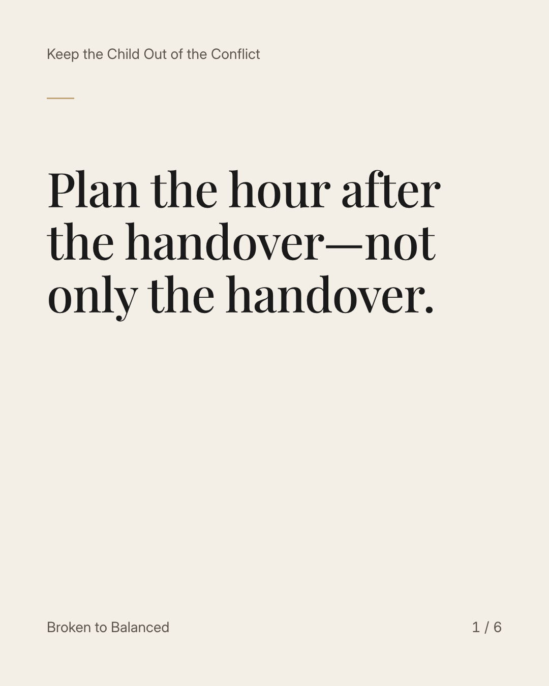
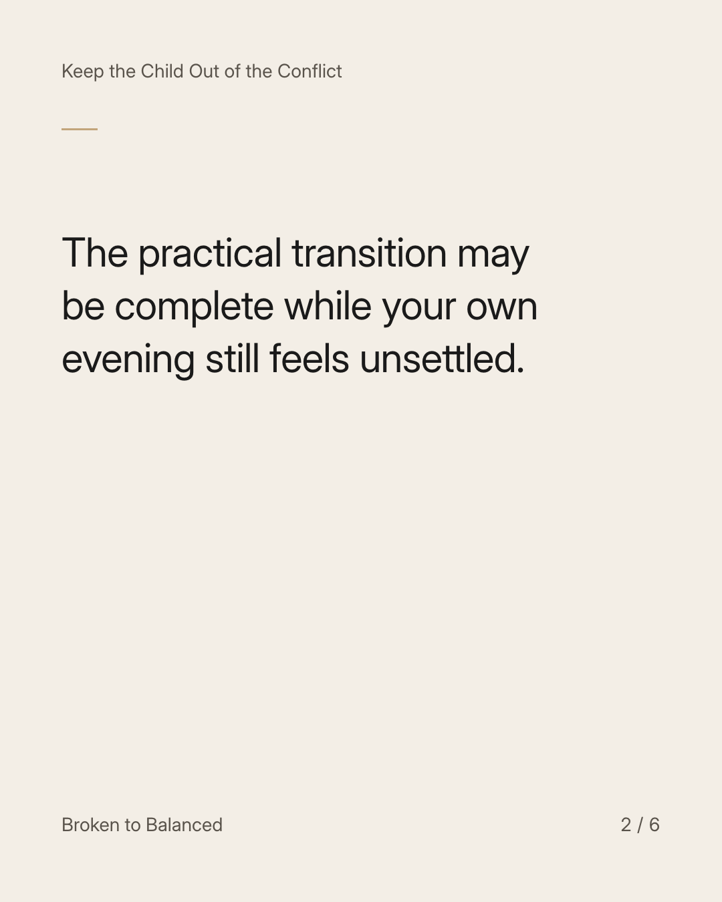
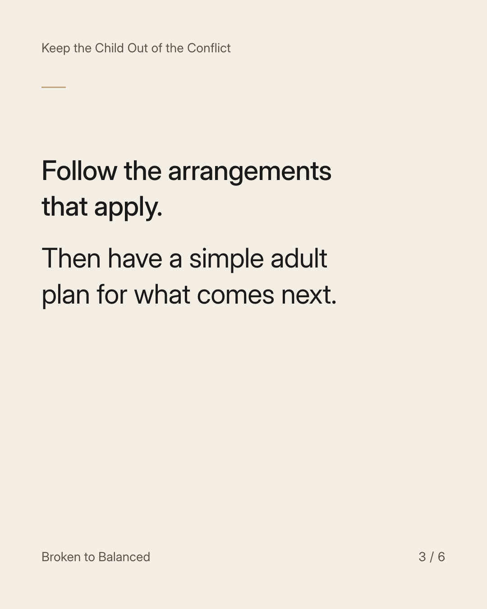
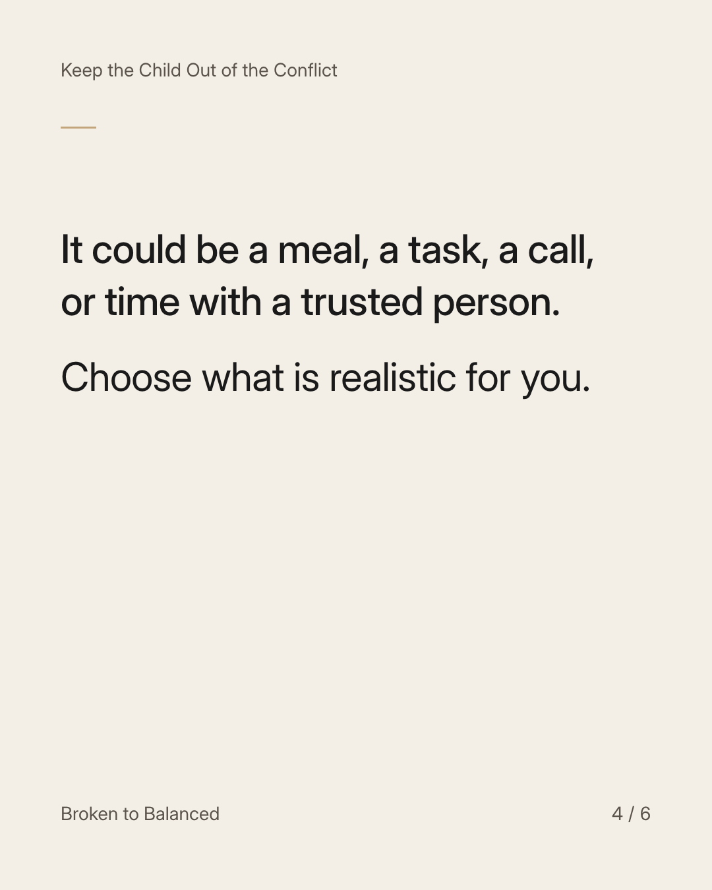
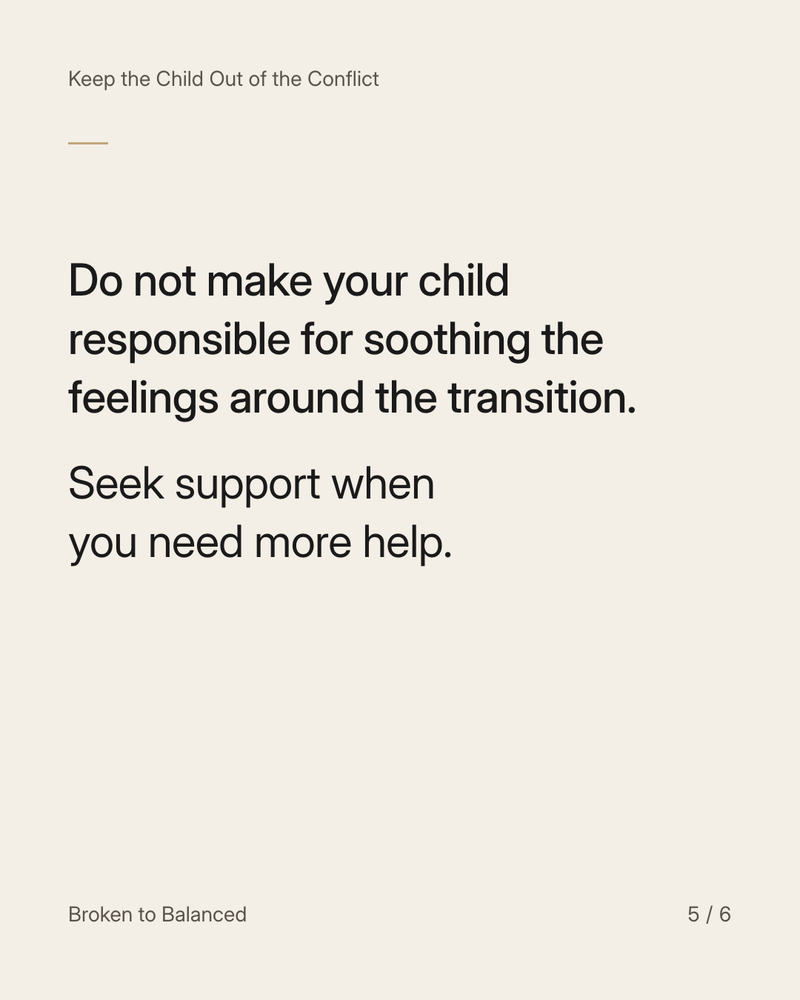
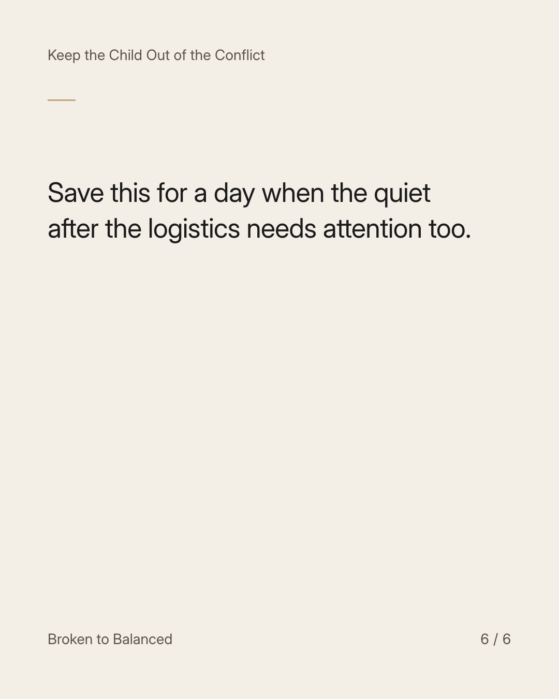

Exact text and accessibility text
Plan the hour after the handover—not only the handover.
Slide 1 of 6. Plan the hour after the handover—not only the handover.


Exact text and accessibility text
The practical transition may be complete while your own evening still feels unsettled.
Slide 2 of 6. The practical transition may be complete while your own evening still feels unsettled.


Exact text and accessibility text
Follow the arrangements that apply. Then have a simple adult plan for what comes next.
Slide 3 of 6. Follow the arrangements that apply. Then have a simple adult plan for what comes next.


Exact text and accessibility text
It could be a meal, a task, a call, or time with a trusted person. Choose what is realistic for you.
Slide 4 of 6. It could be a meal, a task, a call, or time with a trusted person. Choose what is realistic for you.


Exact text and accessibility text
Do not make your child responsible for soothing the feelings around the transition. Seek support when you need more help.
Slide 5 of 6. Do not make your child responsible for soothing the feelings around the transition. Seek support when you need more help.


Exact text and accessibility text
Save this for a day when the quiet after the logistics needs attention too.
Slide 6 of 6. Save this for a day when the quiet after the logistics needs attention too.
Exact caption
Plain-text fallback: select and copy the caption.